User
User adalah fitur yang digunakan untuk mengatur daftar user yang akan menggunakan aplikasi ini.
- Penjelasan User
- Membuat User Non-Portal
- Membuat User Portal
- Memodifikasi User
- Menambah User Role
- Memodifikasi User Role
- Menghapus User Role
- Mengganti Password User
- Mengirimkan Email Aktivasi
- Menonaktifkan User
- Menghapus User
Penjelasan User
Informasi pada Menu User dibagi menjadi beberapa area, diantaranya:
HEADER

Name
Nama User
Email Address
Alamat Email User
Active
Penanda status User aktif
TAB ROLE

Role
Nama Role
From
Tanggal awal Role
To
Tanggal akhir Role
Enabled
Status aktif Role
TAB ACCESS RIGHTS
 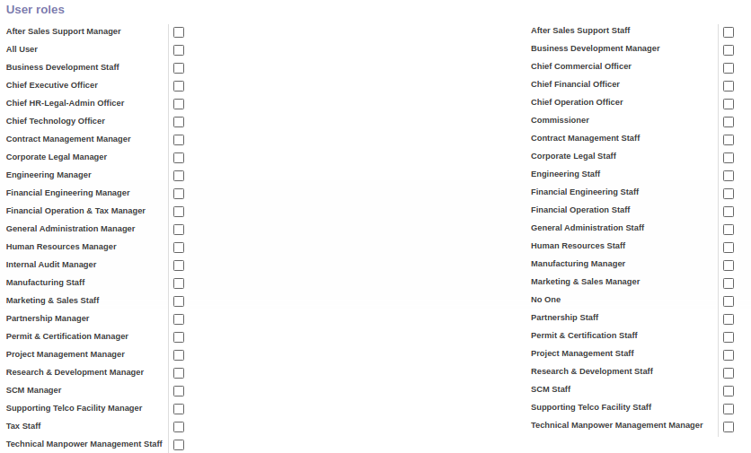
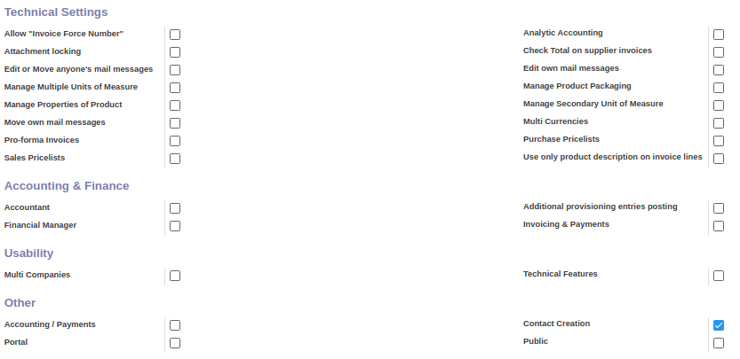
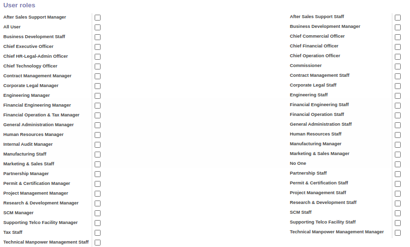
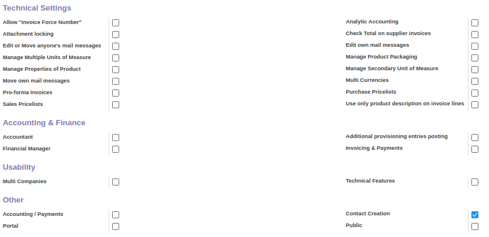
Application
Daftar aplikasi yang dapat diakses dan digunakan oleh user
User Roles
Daftar Role User
Technical Settings
Daftar pengaturan teknis yang dapat diakses dan digunakan oleh User
Accounting & Finance
Daftar pengaturan accounting & finance yang dapat diakses dan digunakan oleh User
Usability
Pengaturan penggunaan fitur yang dapat diakses dan digunakan oleh User
Other
Pengaturan fitur lainnya yang dapat diakses dan digunakan oleh User
TAB OAUTH
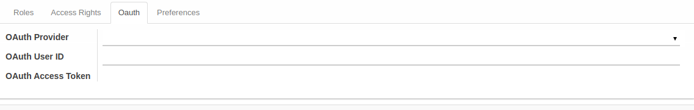
OAuth Provider
Pengaturan penggunaan penyedia autentikasi OAuth
OAuth User ID
Pengaturan informasi identitas User OAuth
OAuth Access Token
Pengaturan informasi token akses OAuth
TAB PREFERENCE
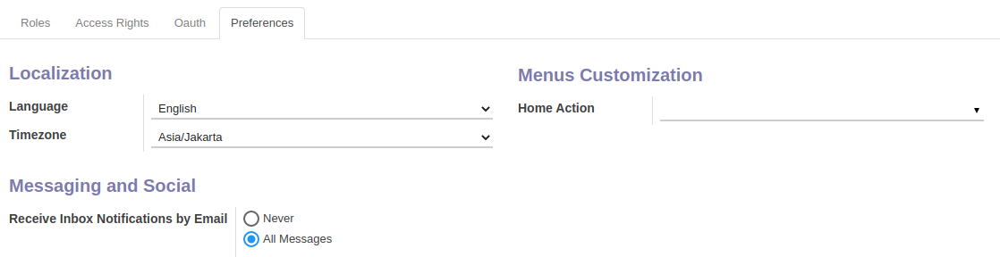 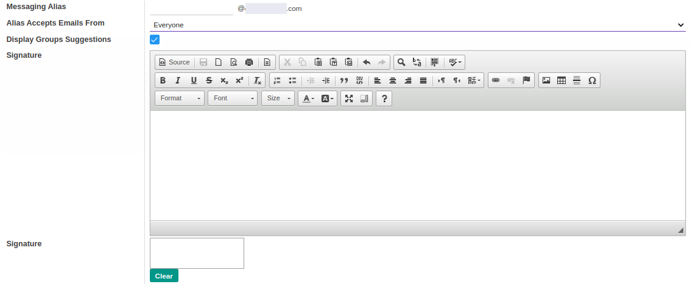 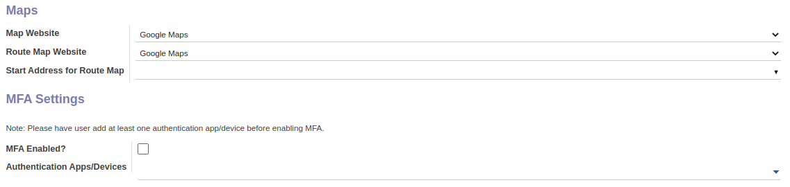
Localization
Pengaturan informasi bahasa dan zona waktu
Menus Customization
Pengaturan kustomisasi menu yang dapat diakses dan digunakan oleh user
Messaging and Social
Pengaturan notifikasi pesan yang diterima oleh user, tampilan email dan signature
Maps
Pengaturan lokasi peta dan rute alamat
MFA Settings
Pengaturan autentikasi Multi-Factor Authentication aplikasi/ perangkat
Membuat User Non-Portal
A. INPUT
(Tidak ada instruksi khusus)
B. LANGKAH KERJA
- Buka menu Setting -> User -> User. Abaikan jika sudah berada pada menu yang dimaksud.
- Klik tombol Create pada bagian atas-kiri form.
- Isi Name. Wajib diisi.
- Isi Email Address. Wajib diisi.
- Aktifkan/ Deaktifkan Active. Tidak wajib diisi.
- Beralih ke tab Role.
- Tambah/Modifikasi/Hapus Role. Ulangi langkah ini sampai Role sesuai dengan keinginan.
- Beralih ke tab Preferences.
- Pilih Language. Tidak wajib diisi.
- Pilih Timezone. Tidak wajib diisi.
- Pilih Home Action. Tidak wajib diisi.
- Pilih Receive Inbox Notifications by Email. Tidak wajib diisi.
- Isi Messaging Alias. Tidak wajib diisi.
- Pilih Alias Accepts Emails From. Tidak wajib diisi.
- Aktifkan/ Deaktifkan Display Groups Suggestions. Tidak wajib diisi.
- Isi Signature. Tidak wajib diisi.
- Pilih Map Website. Tidak wajib diisi.
- Pilih Route Map Website. Tidak wajib diisi.
- Isi Start Address for Route Map. Tidak wajib diisi.
- Aktifkan/ Deaktifkan MFA Enabled. Tidak wajib diisi.
- Isi Authentication Apps/Devices. Tidak wajib diisi.
- Klik tombol Save pada bagian atas-kiri form.

C. OUTPUT
(Tidak ada instruksi khusus)
Membuat User Portal
A. INPUT
(Tidak ada instruksi khusus)
B. LANGKAH KERJA
- Buka menu Partner -> Partner -> Company Partner. Abaikan jika sudah berada pada menu yang dimaksud.
- Buka data partner yang akan diberikan akses user portal.
- Klik tombol More pada bagian atas-tengah form.

- Klik tombol Portal Access Management pada drop-down yang muncul pada tombol More

- Centang checkbox In Portal pada Contact yang akan diberikan akses user portal.

- Klik tombol Apply pada bagian bawah-kiri form.

C. OUTPUT
(Tidak ada instruksi khusus)
Memodifikasi User
A. INPUT
(Tidak ada instruksi khusus)
B. LANGKAH KERJA
- Buka menu Setting -> User -> User. Abaikan jika sudah berada pada menu yang dimaksud.
- Buka data User yang akan dimodifikasi. Abaikan jika data sudah dibuka.
- Klik tombol Edit pada bagian atas-kiri form.

- Isi dan sesuaikan Name jika dibutuhkan. Wajib diisi.
- Isi dan sesuaikan Email Address jika dibutuhkan. Wajib diisi.
- Aktifkan/ Deaktifkan Active jika dibutuhkan. Tidak wajib diisi.
- Beralih ke tab Role
- Tambah/Modifikasi/Hapus Role. Ulangi langkah ini sampai Role sesuai dengan keinginan.
- Beralih ke tab Preferences
- Pilih dan sesuaikan Language jika dibutuhkan. Tidak wajib diisi.
- Pilih dan sesuaikan Timezone jika dibutuhkan. Tidak wajib diisi.
- Pilih dan sesuaikan Home Action jika dibutuhkan. Tidak wajib diisi.
- Pilih dan sesuaikan Receive Inbox Notifications by Email jika dibutuhkan. Tidak wajib diisi.
- Isi dan sesuaikan Messaging Alias jika dibutuhkan. Tidak wajib diisi.
- Pilih dan sesuaikan Alias Accepts Emails From jika dibutuhkan. Tidak wajib diisi.
- Aktifkan/ Deaktifkan Display Groups Suggestions jika dibutuhkan. Tidak wajib diisi.
- Isi dan sesuaikan Signature jika dibutuhkan. Tidak wajib diisi.
- Pilih dan sesuaikan Map Website jika dibutuhkan. Tidak wajib diisi.
- Pilih dan sesuaikan Route Map Website jika dibutuhkan. Tidak wajib diisi.
- Isi dan sesuaikan Start Address for Route Map jika dibutuhkan. Tidak wajib diisi.
- Aktifkan/ Deaktifkan MFA Enabled jika dibutuhkan. Tidak wajib diisi.
- Isi dan sesuaikan Authentication Apps/Devices jika dibutuhkan. Tidak wajib diisi.
- Klik tombol Save pada bagian atas-kiri form.

C. OUTPUT
- Data User akan berubah sesuai dengan perubahan yang dilakukan.
Menambah User Role
(Instruksi kerja ini merupakan sub instruksi dari (1) Membuat User, atau (2) Memodifikasi User. Instruksi kerja ini tidak bisa berdiri sendiri)
A. INPUT
(Tidak ada instruksi khusus)
B. LANGKAH KERJA
- Klik label Add an Item pada tabel Roles.

- Isi Role. Wajib diisi.
- Isi From. Tidak wajib diisi.
- Isi To. Tidak wajib diisi.
- Aktifkan/ Deaktifkan Enabled. Tidak wajib diisi.
- Ulangi langkah ke-1 untuk menambahkan Role baru.
- Lanjutkan langkah ke-8 instruksi Membuat User atau langkah ke-9 instruksi Memodifikasi User.
C. OUTPUT
(Tidak ada instruksi khusus)
Memodifikasi User Role
(Instruksi kerja ini merupakan sub instruksi dari (1) Membuat User, atau (2) Memodifikasi User. Instruksi kerja ini tidak bisa berdiri sendiri)
A. INPUT
(Tidak ada instruksi khusus)
B. LANGKAH KERJA
- Buka data Role yang akan dimodifikasi.
- Isi dan sesuaikan Role jika dibutuhkan. Wajib diisi.
- Isi dan sesuaikan From jika dibutuhkan. Tidak wajib diisi.
- Isi dan sesuaikan To jika dibutuhkan. Tidak wajib diisi.
- Aktifkan/ Deaktifkan Enabled jika dibutuhkan. Tidak wajib diisi.
- Lanjutkan langkah ke-8 instruksi Membuat User atau langkah ke-9 instruksi Memodifikasi User.
C. OUTPUT
(Tidak ada instruksi khusus)
Menghapus User Role
(Instruksi kerja ini merupakan sub instruksi dari (1) Membuat User, atau (2) Memodifikasi User. Instruksi kerja ini tidak bisa berdiri sendiri)
A. INPUT
(Tidak ada instruksi khusus)
B. LANGKAH KERJA
- Klik icon tempat sampah pada bagian kanan Role yang akan dihapus.

- Ulangi langkah ke-1 untuk setiap Role yang akan dihapus.
- Lanjutkan langkah ke-8 instruksi Membuat User atau langkah ke-9 instruksi Memodifikasi User.
C. OUTPUT
(Tidak ada instruksi khusus)
Mengganti Password User
A. INPUT
(Tidak ada instruksi khusus)
B. LANGKAH KERJA
- Buka menu Setting -> User -> User. Abaikan jika sudah berada pada menu yang dimaksud.
- Buka data User yang akan diganti password. Abaikan jika data sudah dibuka.
- Klik tombol More pada bagian atas-tengah form.

- Klik tombol Change Password pada dropdown yang muncul ketika tombol More diklik.
- Isi dan sesuaikan kolom New Password pada pop-up menu Change Password yang muncul.
- Klik tombol Change Password pada bagian kiri-bawah pop-up menu Change Password.

C. OUTPUT
- Data User akan tergantikan dengan Password baru.
Mengirimkan Email Aktivasi
A. INPUT
- Data User yang akan dikirimkan email aktivasi harus memiliki status Never Connected
B. LANGKAH KERJA
- Buka menu Setting -> User -> User. Abaikan jika sudah berada pada menu yang dimaksud.
- Buka data User yang akan dikirimkan email aktivasi. Abaikan jika data sudah dibuka.
- Klik tombol Send an Invitation Email pada bagian atas-kanan form.

- Klik tombol Ok pada pop-up menu Confirmation yang muncul.

C. OUTPUT
- User akan mendapatkan email aktivasi.
Menonaktifkan User
A. INPUT
- Data User yang akan dinonaktifkan harus memiliki status Active

B. LANGKAH KERJA
- Buka menu Setting -> User -> User. Abaikan jika sudah berada pada menu yang dimaksud.
- Buka data User yang akan dinonaktifkan. Abaikan jika data sudah dibuka.
- Klik tombol Edit pada bagian atas-kiri form.
-
Deaktifkan Active.
-
Klik tombol Save pada bagian atas-kiri form.
C. OUTPUT
- Data User akan non aktif.
Menghapus User
A. INPUT
(Tidak ada instruksi khusus)
B. LANGKAH KERJA
- Buka menu Setting -> User -> User. Abaikan jika sudah berada pada menu yang dimaksud.
- Buka data User yang akan dihapus. Abaikan jika data sudah dibuka.
- Klik tombol More pada bagian atas-tengah form.
- Klik tombol Delete pada dropdown yang muncul ketika tombol More diklik.

- Klik tombol Ok pada pop-up konfirmasi penghapusan yang muncul.

C. OUTPUT
- Data User akan terhapus.
Role
Role adalah fitur yang digunakan untuk mengatur Role yang akan diberikan kepada User.
- Penjelasan Role
- Membuat Role
- Memodifikasi Role
- Menghapus Role
- Menambah Group Role
- Menghapus Group Role
Penjelasan Role
Informasi pada Menu Role dibagi menjadi beberapa area, diantaranya:
HEADER

Name
Nama Role.
Associated Group
Group yang terhubung.
TAB GROUPS
Group Name
Nama Group.
TAB USERS
User
Nama User.
From
Tanggal awal User.
To
Tanggal akhir User.
Enabled
Status aktif User.
Membuat Role
A. INPUT
(Tidak ada instruksi khusus)
B. LANGKAH KERJA
- Buka menu Setting -> Users -> Roles. Abaikan jika sudah berada pada menu yang dimaksud.
- Klik tombol Create pada bagian atas-kiri form.

- Isi Name. Wajib diisi.
- Beralih ke tab Groups.
- Tambah/Hapus Group Role. Ulangi langkah ini sampai Group Role sesuai dengan keinginan.
- Klik tombol Save pada bagian atas-kiri form.
C. OUTPUT
(Tidak ada instruksi khusus)
Memodifikasi Role
A. INPUT
(Tidak ada instruksi khusus)
B. LANGKAH KERJA
- Buka menu Setting -> User -> Roles. Abaikan jika sudah berada pada menu yang dimaksud.
- Buka data Role yang akan dimodifikasi. Abaikan jika data sudah dibuka.
- Klik tombol Edit pada bagian atas-kiri form.

- Isi dan sesuaikan Name jika dibutuhkan. Wajib diisi.
- Beralih ke tab Groups.
- Tambah/Hapus Group Role. Ulangi langkah ini sampai Group Role sesuai dengan keinginan.
- Klik tombol Save pada bagian atas-kiri form.

C. OUTPUT
- Data Role akan berubah sesuai dengan perubahan yang dilakukan.
Menghapus Role
A. INPUT
(Tidak ada instruksi khusus)
B. LANGKAH KERJA
- Buka menu Setting -> Users -> Roles. Abaikan jika sudah berada pada menu yang dimaksud.
- Buka data Role yang akan dihapus. Abaikan jika data sudah dibuka.
- Klik tombol More pada bagian atas-tengah form.

- Klik tombol Delete pada dropdown yang muncul ketika tombol More diklik.
- Klik tombol Ok pada pop-up konfirmasi penghapusan yang muncul.

C. OUTPUT
- Data Role akan terhapus.
Menambah Group Role
(Instruksi kerja ini merupakan sub instruksi dari (1) Membuat Role, atau (2) Memodifikasi Role. Instruksi kerja ini tidak bisa berdiri sendiri)
A. INPUT
(Tidak ada instruksi khusus)
B. LANGKAH KERJA
- Klik label Add an Item pada tabel Groups.
Pop-up Group Role akan muncul.


- Seleksi data Group Role.
- Klik tombol Select pada bagian bawah-kiri pop-up Group Role.

C. OUTPUT
(Tidak ada instruksi khusus)
Menghapus Group Role
(Instruksi kerja ini merupakan sub instruksi dari (1) Membuat Role, atau (2) Memodifikasi Role. Instruksi kerja ini tidak bisa berdiri sendiri)
A. INPUT
(Tidak ada instruksi khusus)
B. LANGKAH KERJA
- Klik icon tempat sampah pada bagian kanan Group Role yang akan dihapus.
- Ulangi langkah ke-1 untuk setiap Group Role yang akan dihapus.
- Lanjutkan langkah ke-6 instruksi Membuat Role atau langkah ke-7 instruksi Memodifikasi Role.
C. OUTPUT
(Tidak ada instruksi khusus)
Cancel Reason
Cancel Reason adalah fitur yang digunakan untuk mengatur alasan pembatalan.
- Penjelasan Cancel Reason
- Membuat Cancel Reason
- Memodifikasi Cancel Reason
- Menghapus Cancel Reason
- Menonaktifkan Cancel Reason
Penjelasan Cancel Reason
Informasi pada Menu Cancel Reason dibagi menjadi beberapa area, diantaranya:
HEADER
Cancel Reason
Alasan Pembatalan.
Active
Status aktif Cancel Reason.
TAB NOTES

Catatan.
Membuat Cancel Reason
A. INPUT
(Tidak ada instruksi khusus)
B. LANGKAH KERJA
- Buka menu Setting -> Cancel Reason -> Cancel Reason. Abaikan jika sudah berada pada menu yang dimaksud.
- Klik tombol Create pada bagian atas-kiri form.
- Isi Cancel Reason. Wajib diisi.
- Aktifkan/ Deaktifkan Active. Tidak wajib diisi.
- Beralih ke tab Notes.
- Isi Notes. Tidak wajib diisi.
- Klik tombol Save pada bagian atas-kiri form.
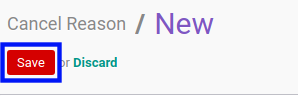
C. OUTPUT
(Tidak ada instruksi khusus)
Memodifikasi Cancel Reason
A. INPUT
(Tidak ada instruksi khusus)
B. LANGKAH KERJA
- Buka menu Setting -> Cancel Reason -> Cancel Reason. Abaikan jika sudah berada pada menu yang dimaksud.
- Buka data Cancel Reason yang akan dimodifikasi. Abaikan jika data sudah dibuka.
- Klik tombol Edit pada bagian atas-kiri form.

- Isi dan sesuaikan Cancel Reason jika dibutuhkan. Wajib diisi.
- Aktifkan/ Deaktifkan Active jika dibutuhkan. Tidak wajib diisi.
- Beralih ke tab Notes.
- Isi dan sesuaikan Notes jika dibutuhkan. Tidak wajib diisi.
- Klik tombol Save pada bagian atas-kiri form.

C. OUTPUT
- Data Cancel Reason akan berubah sesuai dengan perubahan yang dilakukan.
Menonaktifkan Cancel Reason
A. INPUT
- Data Cancel Reason yang akan dinonaktifkan harus memiliki status Active

B. LANGKAH KERJA
- Buka menu Setting -> Cancel Reason -> Cancel Reason. Abaikan jika sudah berada pada menu yang dimaksud.
- Buka data Cancel Reason yang akan dinonaktifkan. Abaikan jika data sudah dibuka.
- Klik tombol Edit pada bagian atas-kiri form.
-
Deaktifkan Active.
-
Klik tombol Save pada bagian atas-kiri form.
C. OUTPUT
- Data Cancel Reason akan non aktif.
Menghapus Cancel Reason
A. INPUT
(Tidak ada instruksi khusus)
B. LANGKAH KERJA
- Buka menu Setting -> Cancel Reason -> Cancel Reason. Abaikan jika sudah berada pada menu yang dimaksud.
- Buka data Cancel Reason yang akan dihapus. Abaikan jika data sudah dibuka.
- Klik tombol More pada bagian atas-tengah form.

- Klik tombol Delete pada dropdown yang muncul ketika tombol More diklik.

- Klik tombol Ok pada pop-up konfirmasi penghapusan yang muncul.

C. OUTPUT
- Data Cancel Reason akan terhapus.
Cancel Reason Configuration
Cancel Reason Configuration adalah fitur yang digunakan untuk mengatur konfigurasi Cancel Reason.
- Penjelasan Cancel Reason Configuration
- Memodifikasi Cancel Reason Configuration
- Menambah Cancel Reason
- Menghapus Cancel Reason
Penjelasan Cancel Reason Configuration
Informasi pada Menu Cancel Reason Configurator dibagi menjadi beberapa area, diantaranya:
HEADER
Model
Model Cancel Reason Configuration.
Method Cancel Name
Nama metode pembatalan.
Active
Status aktif Cancel Reason Configuration.
TAB REASONS
Cancel Reason
Item Cancel Reason yang digunakan.
Active
Status aktif item Cancel Reason yang digunakan.
TAB NOTES

Catatan.
Memodifikasi Cancel Reason Configuration
A. INPUT
(Tidak ada instruksi khusus)
B. LANGKAH KERJA
- Buka menu Setting -> Cancel Reason -> Cancel Reason Configuration. Abaikan jika sudah berada pada menu yang dimaksud.
- Buka data Cancel Reason Configuration yang akan dimodifikasi. Abaikan jika data sudah dibuka.
- Klik tombol Edit pada bagian atas-kiri form.
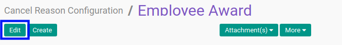
- Beralih ke tab Reasons.
- Tambah/Hapus Cancel Reason. Ulangi langkah ini sampai Cancel Reason sesuai dengan keinginan.
- Beralih ke tab Notes.
- Isi dan sesuaikan Notes jika dibutuhkan. Tidak wajib diisi.
- Klik tombol Save pada bagian atas-kiri form.

C. OUTPUT
- Data Cancel Reason Configuration akan berubah sesuai dengan perubahan yang dilakukan.
Audit Rules
Audit Rules adalah fitur yang digunakan untuk mengatur model aturan pelacakan sistem atas perubahan yang dilakukan oleh User.
- Penjelasan Audit Rules
- Membuat Audit Rules
- Memodifikasi Audit Rules
- Menghapus Audit Rules
- Menerapkan Audit Rules
- Mematikan Audit Rules
Penjelasan Audit Rules
Informasi pada Menu Audit Rules dibagi menjadi beberapa area, diantaranya:
HEADER

Name
Nama Audit Rules.
Model
Model Audit Rules yang digunakan.
Type
Tipe Log.
Action
Tindakan yang dilakukan.
Log Reads
Status aktif Log Reads.
Log Writes
Status aktif Log Writes.
Log Deletes
Status aktif Log Deletes.
Log Creates
Status aktif Log Creates.
Log Methods
Status aktif Log Methods.
Membuat Audit Rules
A. INPUT
(Tidak ada instruksi khusus)
B. LANGKAH KERJA
- Buka menu Reporting -> Audit -> Rules. Abaikan jika sudah berada pada menu yang dimaksud.
- Klik tombol Create pada bagian atas-kiri form.
- Isi Name. Wajib diisi.
- Pilih Model. Wajib diisi.
- Pilih Type. Wajib diisi.
- Aktifkan/ Deaktifkan Log Reads. Tidak wajib diisi.
- Aktifkan/ Deaktifkan Log Writes. Tidak wajib diisi.
- Aktifkan/ Deaktifkan Log Deletes. Tidak wajib diisi.
- Aktifkan/ Deaktifkan Log Creates. Tidak wajib diisi.
- Aktifkan/ Deaktifkan Log Methods. Tidak wajib diisi.
- Klik tombol Save pada bagian atas-kiri form.

C. OUTPUT
(Tidak ada instruksi khusus)
Memodifikasi Audit Rules
A. INPUT
(Tidak ada instruksi khusus)
B. LANGKAH KERJA
- Buka menu Reporting -> Audit -> Rules. Abaikan jika sudah berada pada menu yang dimaksud.
- Buka data Audit Rules yang akan dimodifikasi. Abaikan jika data sudah dibuka.
- Klik tombol Edit pada bagian atas-kiri form.

- Isi dan sesuaikan Name jika dibutuhkan. Wajib diisi.
- Pilih dan sesuaikan Model jika dibutuhkan. Wajib diisi.
- Pilih dan sesuaikan Type jika dibutuhkan. Wajib diisi.
- Aktifkan/ Deaktifkan Log Reads jika dibutuhkan. Tidak wajib diisi.
- Aktifkan/ Deaktifkan Log Writes jika dibutuhkan. Tidak wajib diisi.
- Aktifkan/ Deaktifkan Log Deletes jika dibutuhkan. Tidak wajib diisi.
- Aktifkan/ Deaktifkan Log Creates jika dibutuhkan. Tidak wajib diisi.
- Aktifkan/ Deaktifkan Log Methods jika dibutuhkan. Tidak wajib diisi.
- Klik tombol Save pada bagian atas-kiri form.

C. OUTPUT
- Data Audit Rules akan berubah sesuai dengan perubahan yang dilakukan.
Menghapus Audit Rules
A. INPUT
(Tidak ada instruksi khusus)
B. LANGKAH KERJA
- Buka menu Reporting -> Audit -> Rules. Abaikan jika sudah berada pada menu yang dimaksud.
- Buka data Audit Rules yang akan dihapus. Abaikan jika data sudah dibuka.
- Klik tombol More pada bagian atas-tengah form.
- Klik tombol Delete pada dropdown yang muncul ketika tombol More diklik.
- Klik tombol Ok pada pop-up konfirmasi penghapusan yang muncul.
C. OUTPUT
- Data Audit Rules akan terhapus.
Menerapkan Audit Rules
A. INPUT
- Data Audit Rules yang akan diterapkan harus memiliki status Draft

B. LANGKAH KERJA
- Buka menu Reporting -> Audit -> Rules. Abaikan jika sudah berada pada menu yang dimaksud.
- Buka data Audit Rules yang akan diterapkan. Abaikan jika data sudah dibuka.
- Klik tombol Subscribe pada bagian atas-kiri form.

C. OUTPUT
- Data Audit Rules akan diterapkan dalam sistem.
Mematikan Audit Rules
A. INPUT
- Data Audit Rules yang akan dimatikan harus memiliki status Subscribed.
B. LANGKAH KERJA
- Buka menu Reporting -> Audit -> Rules. Abaikan jika sudah berada pada menu yang dimaksud.
- Buka data Audit Rules yang akan dimatikan. Abaikan jika data sudah dibuka.
- Klik tombol Unsubscribe pada bagian atas-kiri form.
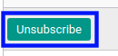
C. OUTPUT
- Data Audit Rules akan dimatikan dalam sistem.
Sequence
Sequence adalah fitur yang digunakan untuk mengatur penomoran dokumen transaksi.
- Penjelasan Sequence
- Membuat Sequence
- Memodifikasi Sequence
- Menghapus Sequence
- Menonaktifkan Sequence
- Membuat Cron Untuk Mereset Sequence
Penjelasan Sequence
Informasi pada Menu User dibagi menjadi beberapa area, diantaranya:
HEADER
Name
Nama Sequence.
Company
Perusahaan yang menggunakan sequence.
Sequence Type
Tipe sequence.
Active
Penanda status sequence aktif.
TAB SEQUENCE
Prefix
Karakter yang digunakan sebelum nomor urut dokumen.
Suffix
Karakter yang digunakan setelah nomor urut dokumen.
Number Padding
Jumlah karakter nomor dokumen.
Next Number
Nomor urut dokumen yang digunakan pada transaksi selanjutnya.
Increment Number
Nilai yang ditambahkan pada Next Number setelah transaksi menghasilkan nomor dokumen.
Implementation
Skenario implementasi urutan nomor dokumen.
TAB FISCAL YEARS

Fiscal Year
Tahun fiskal implementasi sequence.
Sequence
Sequence yang digunakan pada tahun fiskal.
TAB CRON
Cron
Pengaturan reset sequence untuk periode tertentu.
Membuat Sequence
A. INPUT
(Tidak ada instruksi khusus)
B. LANGKAH KERJA
- Buka menu Setting -> Technical -> Sequences & Identifiers -> Sequences. Abaikan jika sudah berada pada menu yang dimaksud.
- Klik tombol Create pada bagian atas-kiri form.
- Isi Name. Wajib diisi.
- Pilih Company. Wajib diisi.
- Pilih Sequence Type. Tidak wajib diisi.
- Aktifkan/ Deaktifkan Active. Tidak wajib diisi.
- Beralih ke tab Sequence.
- Isi Prefix. Tidak wajib diisi.
- Isi Suffix. Tidak wajib diisi.
- Isi Number Padding. Wajib diisi.
- Isi Next Number. Wajib diisi.
- Isi Increment Number. Wajib diisi.
- Pilih Implementation. Wajib diisi.
- Klik tombol Save pada bagian atas-kiri form.
C. OUTPUT
(Tidak ada instruksi khusus)
Memodifikasi Sequence
A. INPUT
(Tidak ada instruksi khusus)
B. LANGKAH KERJA
- Buka menu Setting -> Technical -> Sequences & Identifiers -> Sequences. Abaikan jika sudah berada pada menu yang dimaksud.
- Buka data Sequence yang akan dimodifikasi. Abaikan jika data sudah dibuka.
- Klik tombol Edit pada bagian atas-kiri form.
- Isi dan sesuaikan Name jika dibutuhkan. Wajib diisi.
- Pilih dan sesuaikan Company jika dibutuhkan. Wajib diisi.
- Pilih dan sesuaikan Sequence Type jika dibutuhkan. Tidak wajib diisi.
- Aktifkan/ Deaktifkan Active jika dibutuhkan. Tidak wajib diisi.
- Beralih ke tab Sequence.
- Isi dan sesuaikan Prefix jika dibutuhkan. Tidak wajib diisi.
- Isi dan sesuaikan Suffix jika dibutuhkan. Tidak wajib diisi.
- Isi dan sesuaikan Number Padding jika dibutuhkan. Wajib diisi.
- Isi dan sesuaikan Next Number jika dibutuhkan. Wajib diisi.
- Isi dan sesuaikan Increment Number jika dibutuhkan. Wajib diisi.
- Pilih dan sesuaikan Implementation jika dibutuhkan. Wajib diisi.
- Klik tombol Save pada bagian atas-kiri form.
C. OUTPUT
- Data Sequence akan berubah sesuai dengan perubahan yang dilakukan.
Menghapus Sequence
A. INPUT
(Tidak ada instruksi khusus)
B. LANGKAH KERJA
- Buka menu Setting -> Technical -> Sequences & Identifiers -> Sequences. Abaikan jika sudah berada pada menu yang dimaksud.
- Buka data Sequence yang akan dihapus. Abaikan jika data sudah dibuka.
- Klik tombol More pada bagian atas-tengah form.

- Klik tombol Delete pada dropdown yang muncul ketika tombol More diklik.

- Klik tombol Ok pada pop-up konfirmasi penghapusan yang muncul.
C. OUTPUT
- Data Sequence akan terhapus.
Menonaktifkan Sequence
A. INPUT
- Data Sequence yang akan dinonaktifkan harus memiliki status Active
B. LANGKAH KERJA
- Buka menu Setting -> Technical -> Sequences & Identifiers -> Sequences. Abaikan jika sudah berada pada menu yang dimaksud.
- Buka data Sequence yang akan dinonaktifkan. Abaikan jika data sudah dibuka.
- Klik tombol Edit pada bagian atas-kiri form.
-
Deaktifkan Active.
-
Klik tombol Save pada bagian atas-kiri form.
C. OUTPUT
- Data Sequence akan non aktif.
Membuat Cron Untuk Mereset Sequence
A. INPUT
(Tidak ada instruksi khusus)
B. LANGKAH KERJA
- Buka menu Setting -> Technical -> Sequences & Identifiers -> Sequences. Abaikan jika sudah berada pada menu yang dimaksud.
- Buka data Sequence yang akan dibuat Cron. Abaikan jika data sudah dibuka.
- Beralih ke tab Cron.
- Klik tombol Create Cron pada bagian atas-kiri tab.

C. OUTPUT
(Tidak ada instruksi khusus)